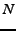
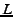
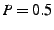
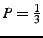
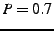
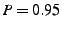

In order to cover as much of the problem space as possible, I wrote a script to generate sets of 500 randomly-generated formulas varying the formula length and number of variables as in [1]. It randomly generates sets of 500 formulas varying the number of variables,

, from 1 to 5, and the length of the formula,
, from 5 up to 200. It sets the probability of choosing a temporal operator
to create formulas with both a nontrivial temporal structure and a nontrivial Boolean structure. For temporal tests, formulas are also generated with
,
, and
. Other choices are decided uniformly. When generating a set of length , every formula created is exactly of length and not up to , however, these randomly-generated formulas are frequently reducible.
Here is the script used to generate random formulas in the style of [1]:
In our paper, [4], all of the random formulas we used were generated prior to testing, so each tool was run on the same formulas. If you wish to re-create our tests exactly, the set of formulas generated for our experiments are here: